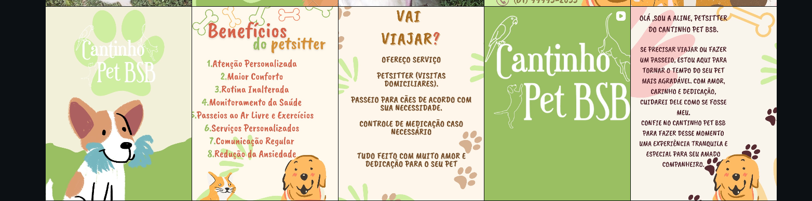
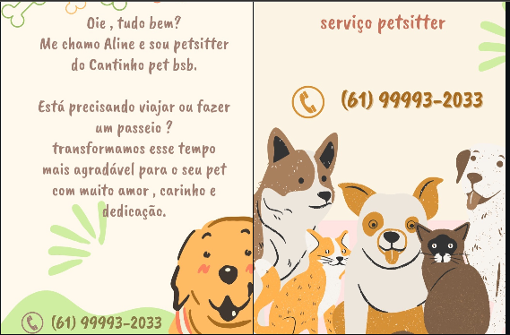

Visitas domiciliares
Cuido do seu pet em casa, mantendo o ambiente conhecido, a alimentação e a rotina dele.
Visitas domiciliares, passeios para cães, rotina preservada e atenção personalizada para o seu companheiro no conforto do lar.
“Cuidarei dele como se fosse meu.”
Se você precisa viajar, fazer um passeio ou passar algumas horas fora, transformo esse tempo em uma experiência mais tranquila, segura e agradável para o seu pet.
Atendimento com amor, carinho, dedicação e comunicação durante o cuidado.
Cuido do seu pet em casa, mantendo o ambiente conhecido, a alimentação e a rotina dele.
Passeios de acordo com a necessidade, energia e segurança do seu cachorro.
Administração de medicação conforme orientação do tutor, quando necessário.
Envio de notícias, fotos e informações para você acompanhar tudo de pertinho.


Fale pelo WhatsApp e conte a rotina, necessidades e personalidade do seu companheiro.